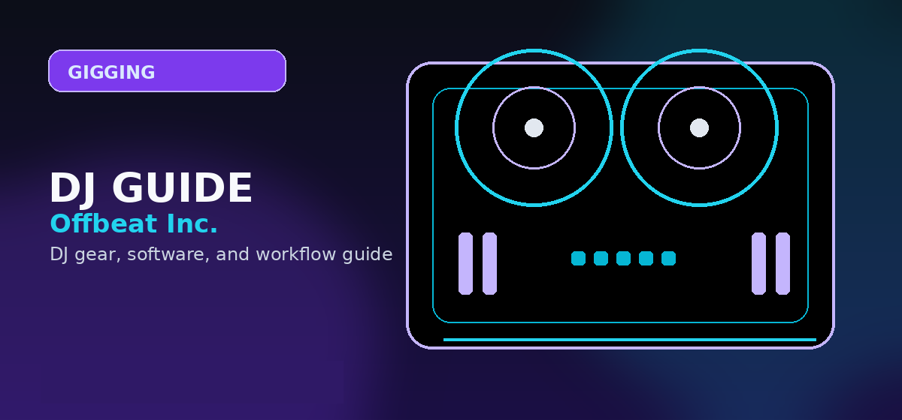

Festival DJ Gear Checklist 2026: Everything You Need Before Festival Season
Complete festival DJ gear checklist for 2026 — from backup equipment and cables to power solutions, laptop stands, and emergency spares. Don't get caught unprepared.
✍️ By Offbeat Editorial Team📅 Updated June 2026⏱️ 9 min read

Photo: Unsplash
Disclosure: This page uses affiliate links. We may earn a commission at no extra cost to you. Full disclosure →
Festival Season 2026
Festival season (May–September) is the highest-stakes gig a DJ can play. One equipment failure in front of a 5,000-person crowd with no backup is career-defining — in the wrong way. This checklist covers every piece of gear you need, from the obvious to the easily-forgotten, with practical recommended picks for each category.
Photo: Unsplash
★ Primary DJ Setup
Your main rig. Know it cold before festival day. Test every cable, every connection, every software setting.
☐
DJ Controller or CDJ/Mixer setupESSENTIAL
Your main performance unit. Confirm it works with the festival’s provided equipment requirements. Bring your own if at all possible — borrowing saves weight, not reliability.
Serato DJ Pro, Rekordbox, Traktor — confirm your license is active and up-to-date. Disable auto-updates the week before the festival. Test the exact version on your festival laptop.
☐
USB drives (multiple copies)ESSENTIAL
If playing on CDJs, export your track collection to 2-3 USB drives. Use high-quality USB 3.0 drives. Test on CDJ hardware before the event, not just your laptop.
The difference between a professional and an amateur is redundancy. If you can’t afford to bring a full backup controller, identify which pieces are most likely to fail and double up on those.
If your laptop is your main instrument, a backup laptop with an identical software setup is the single most important spare you can bring. If cost prohibits this, at minimum prepare a USB drive with your full set exported for CDJ playback.
☐
Spare headphonesIMPORTANT
A cheap but functional backup pair. Headphone cables fail more often than the cans themselves — bring a spare cable too.
Cables are the most commonly forgotten category. They’re cheap, small, and irreplaceable at 2am when the festival shop is closed.
☐
XLR cables (x3 minimum)ESSENTIAL
Main output to PA system. Bring at least 3: 2 for your stereo output, 1 spare. Standard lengths: one ×3m, one ×5m. Check festival rider for required lengths.
☐
RCA-to-TRS/XLR adaptersESSENTIAL
Even if your controller outputs XLR, the booth mixer input might be RCA. Bring adapters both ways.
☐
USB-A to USB-B / USB-C cablesESSENTIAL
Controller to laptop. Bring 2 of whatever your controller uses. USB cables fail from repeated coiling. The second cable has saved countless sets.
☐
USB-A hub (powered)IMPORTANT
When you need to connect controller + USB drive + MIDI device simultaneously. A powered hub prevents bus power issues.
☐
3.5mm TRS to 6.35mm (1/4") headphone adapterIMPORTANT
Festival booths often only have 1/4" headphone jacks. Your consumer headphones likely have 3.5mm. This adapter costs $2 and has saved many sets.
☐
Ethernet cable + USB adapterOPTIONAL
For Rekordbox Pro Link or networked setups. Also useful if you need to download files at the venue and WiFi is unreliable.
⚡ Power Solutions
☐
Laptop charger + spare if possibleESSENTIAL
Leaving your charger at the hotel is a festival catastrophe. Tape it to your bag handle the night before.
☐
Power strip with surge protection (4-6 outlets)IMPORTANT
Festival booths rarely have enough outlets. A surge-protected power strip with a long cable is often the thing other DJs borrow from you.
For charging phone/tablet offstage, or powering small USB devices if booth power fails. Not a replacement for mains power but a useful bridge.
☐
Voltage adapter (for international festivals)OPTIONAL
Europe (220V/50Hz) vs. US (110V/60Hz). Check your equipment’s power supply rating — most modern chargers are universal (100-240V), but confirm before traveling.
📦 Transport & Protection
☐
DJ controller bag/caseESSENTIAL
A padded bag or flight case for your controller. For festivals, a semi-rigid case balances protection with transport weight.
CDJ booths are built for eye-level CDJs, not laptops sitting flat on a table. A foldable laptop stand puts your screen at the right height for monitoring waveforms.
☐
Backpack or gear carry-allESSENTIAL
Everything not in the controller case needs a home. A dedicated bag where you can access cables, adapters, and spares without unpacking everything.
💻 Laptop & Software Prep
This section is critical and often overlooked. Most DJ laptop failures at festivals are software, not hardware.
☐
Disable auto-updates (OS, DJ software, drivers)ESSENTIAL
A Windows update mid-set or a Serato update that requires restart has ruined sets. Freeze your system 1 week before the festival. No updates until after.
☐
Disable sleep/hibernate for set durationESSENTIAL
Set power settings so the laptop never sleeps during your set. On Windows: Power Plan → Never sleep. On Mac: Energy Saver → Prevent sleep.
☐
Full track library synced and analyzedESSENTIAL
All tracks should be analyzed (waveforms, BPM, cue points set) before the festival. Don’t rely on live analysis during a set.
☐
Cloud backup of library + settingsIMPORTANT
Back up your cue points, hot cues, and playlists to Dropbox/Google Drive. If your drive fails, you can restore from another device.
😎 Comfort & Ergonomics
☐
Earplugs (custom or foam)ESSENTIAL
You will be next to loud speakers for hours. Custom-molded musician’s earplugs (Etymotic, Earasers) preserve hearing while keeping clarity. Standard foam works but muddy the sound.
☐
Snacks, water, electrolytesESSENTIAL
Festival catering backstage is unreliable and expensive. Bring energy bars, nuts, and electrolyte tablets. Dehydration causes errors.
☐
Small flashlight or headlampIMPORTANT
Booths are dark. If you drop a USB drive or need to trace a cable mid-set, you need light. A small LED headlamp keeps hands free.
🚨 Emergency Kit
The items in this section cost under $50 total. Every one of them has saved a DJ set.
☐
Gaffer tape (small roll) — cable management, affixing gear to tables, fixing broken things
☐
Permanent marker + label tape — label all cables so they come back to you
☐
Small multi-tool (Leatherman/Victorinox) — tightening screws, cable management
☐
Phone charger cable + power bank — for communication during the event
Printed copy of set list + timing — if your laptop fails and you need to reference the plan
Festival-Specific Considerations and Risk Management
Outdoor festivals introduce weather risks that indoor venues don't have. Pack all cables and electronics in waterproof bags. Bring a pop-up tent or thermal blanket in case setup areas are in direct sun (heat damage to gear is real). Test all connections before you arrive — festival environments have high humidity, sand, and dust that corrode connectors. Have a backup entire DJ setup (controller, headphones, cables) if the festival is 4+ hours away and replacement parts aren't available locally.
Loading In and Stage Setup Timeline
Most festivals allocate 15-30 minutes for setup per DJ. Practice your complete setup routine at home — from unpacking to first track playing — so you can do it flawlessly in 20 minutes on stage. Document your cable routing (label each cable, take a photo) so setup is identical every time. Communicate with the sound engineer at least 15 minutes before your set: confirm your headphone output signal is routing correctly, test the booth monitoring mix, and establish hand signals if communication is difficult on a loud stage.
Post-Festival Tear-Down and Gear Care
After your set, pack gear immediately — don't leave it exposed. Check all connectors for corrosion or sand damage. Clean your controller with a microfiber cloth and compressed air (never use water). Inspect your headphones for damage. Backup your crate and set list to cloud storage before leaving the venue. Most DJ equipment damage happens during tear-down when people are tired — slow down and be methodical.
Summary: What to Definitely Bring
If you only have space for the essentials:
Item
Why It Matters
Cost (approx.)
Backup USB drives (x2)
Most common festival failure point
$30
USB-A to controller cable (x2)
Cable failures kill sets
$15
XLR cables (x3)
Booth connectivity
$40
3.5mm to 1/4" headphone adapter
Saved hundreds of sets
$5
Surge-protected power strip
Booths never have enough outlets
$25
Backup headphones
Sweat + heat kills headphone cables
$60-200
Gaffer tape
Fixes everything
$8
Earplugs (musician grade)
Protect your career's core tool
$20-200
Total for essentials kit: ~$200. A bargain when a festival gig can earn $500-2,000+.
What's the single most important backup item to bring to a festival?
Two pre-loaded USB drives with your full set. USB failure is by far the most common reason DJs lose a festival slot — drives fail, get corrupted, or get left behind. Always have a spare with a copy of your music ready to go.
Should I bring my own DJ controller to a festival?
Only if the festival doesn't specify what's in the booth. Most large festivals provide Pioneer CDJ-2000NXS2s and a DJM-900NX2. Confirm the rider in advance, and always know your software works on the provided gear. If you rely on a specific controller, bring it but expect to be the exception.
How do I protect my equipment from heat and dust outdoors?
Use a hard-shell case for transport and keep gear in the shade or inside a tent before your set. A controller bag with padding is essential for outdoor travel. Gaffer tape and a microfibre cloth are also useful for quick clean-ups in dusty conditions.
What cable should I never forget at a festival?
A 3.5mm to 1/4" headphone adapter. Headphone jacks on festival mixers vary and this tiny $5 adapter has saved countless sets. Bring two. Also pack an extra XLR pair — booth cables are often missing, damaged, or already claimed by another act.
How far in advance should I prepare my festival gear checklist?
At least 72 hours before your set. This gives you time to discover any missing or broken gear and order replacements. Pack the night before, not the morning of — stress causes mistakes, and last-minute Amazon orders won't arrive in time.
Offbeat Inc. reviews DJ controllers, software, headphones, mixers, and setup workflows from the perspective of working DJs, beginners building their first rig, and creators choosing reliable tools for practice, recording, and gigs.
Festival Dj Gear Checklist buying checkpoint
Before you click out, use this quick fit check to keep the next step matched to your setup and budget.
Bring a backup laptop or prepared USB/CDJ fallback to avoid career-defining failures during your set.
Pack spare headphones, USB drives, and cables to handle common gear failures at loud, high-pressure festivals.
Use a foldable laptop stand and power strip with surge protection to match booth ergonomics and avoid power shortages.